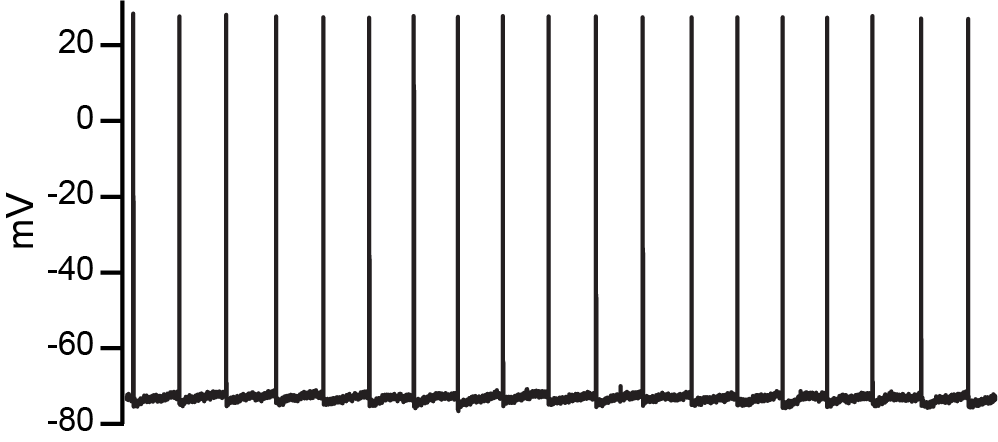
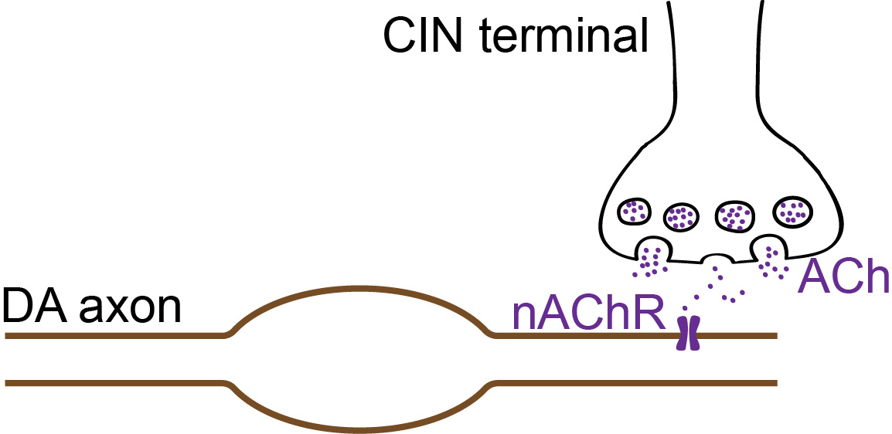
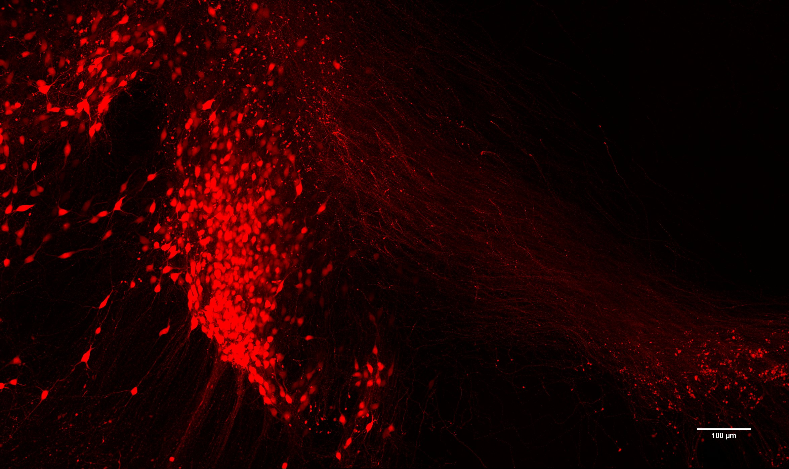

Welcome to the new Kramer Lab website!
Kramer Lab
Exploring the Role of Axons in Neurotransmission
Welcome
The Kramer Lab investigates the hypothesis that axons have an active and unexplored role in neurotransmission. We believe axons can process information and generate outputs comparable to the cell body and dendrites, contributing to both normal brain function and neurological disease mechanisms.
Research Areas

Axon Physiology
Exploring how axons process and transmit action potentials, and how ion channels control signal shape and neurotransmitter release.
Axo-axonic Transmission
Studying direct communication between axon terminals, including synaptic-like transmission mechanisms.

Substance Use Disorders
Examining how nicotine and other substances of abuse affect neuronal signaling pathways and dopamine systems.
Parkinson's Disease
Investigating dopaminergic system dysfunction and its relevance to motor control disorders.
